Иван Трояновский
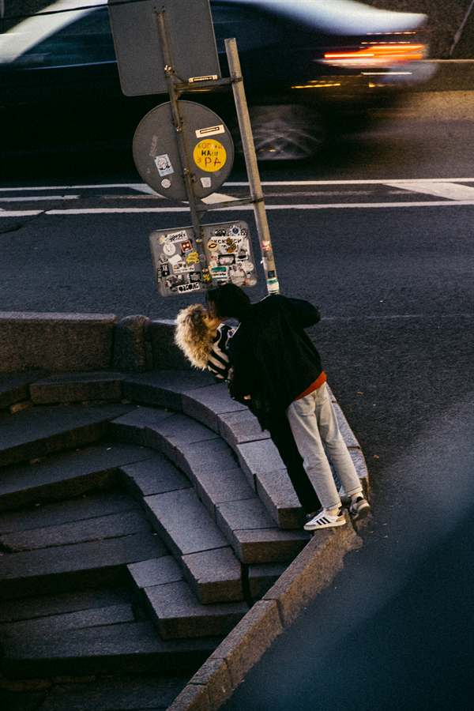
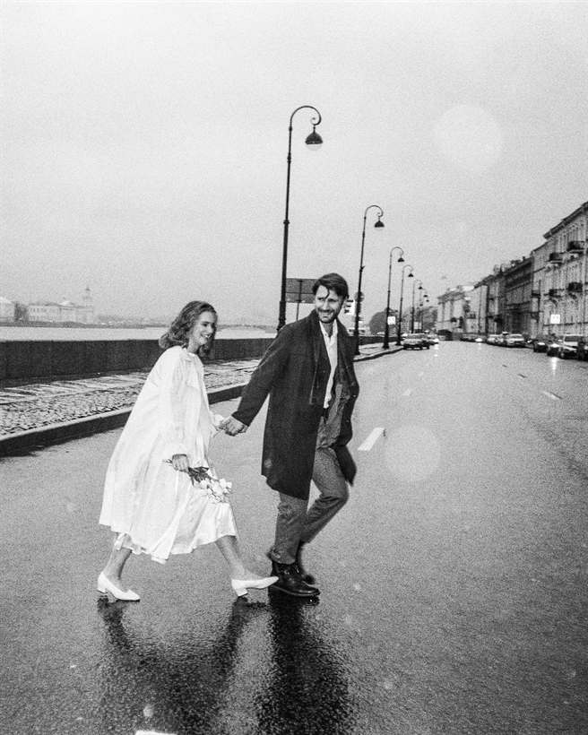
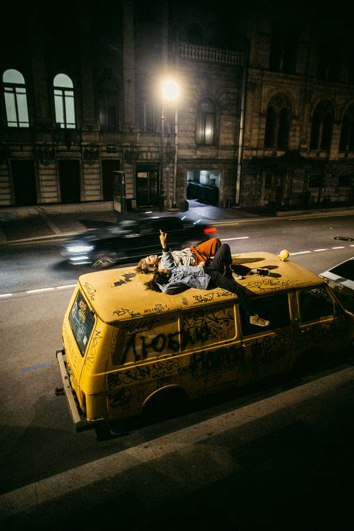
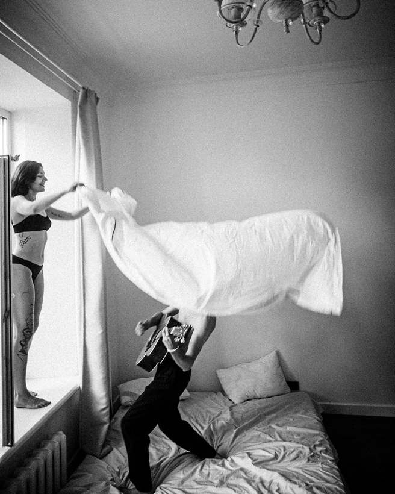
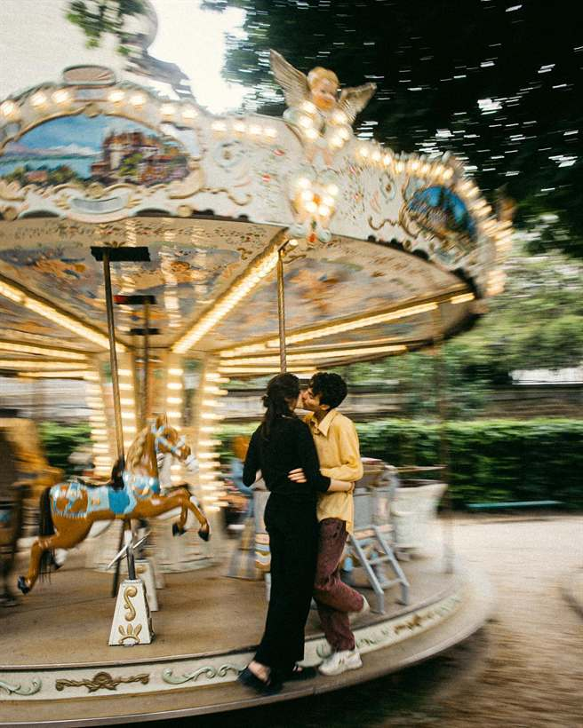
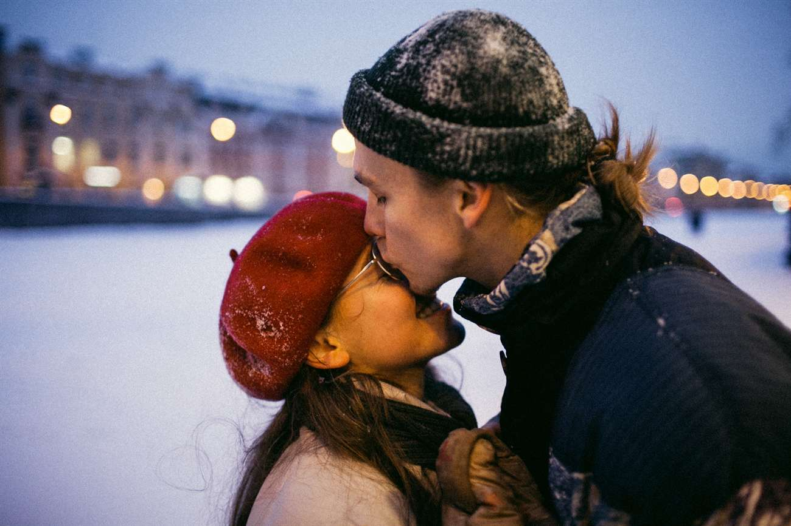
Акт I
Первый взгляд
Всё начинается с того, что двое перестают смотреть по сторонам.
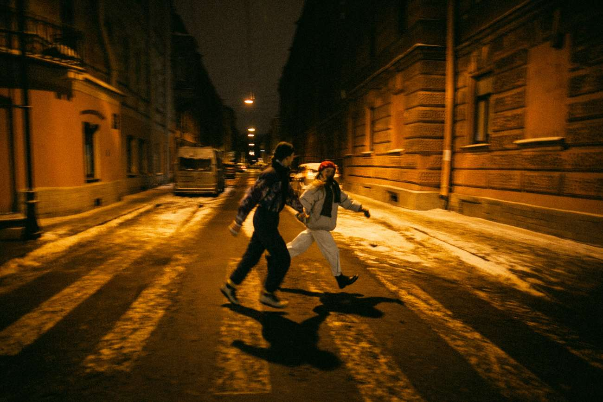
Манифест
Я не расставляю людей и не прошу посмотреть в камеру. Первые двадцать минут почти не снимаю — хожу рядом, пока про меня не забывают. Дальше начинается то, ради чего меня позвали.
Мне важно, что было до. Как познакомились, кто первый написал, из-за чего чуть не разошлись на втором году. Без этого получаются красивые чужие люди.
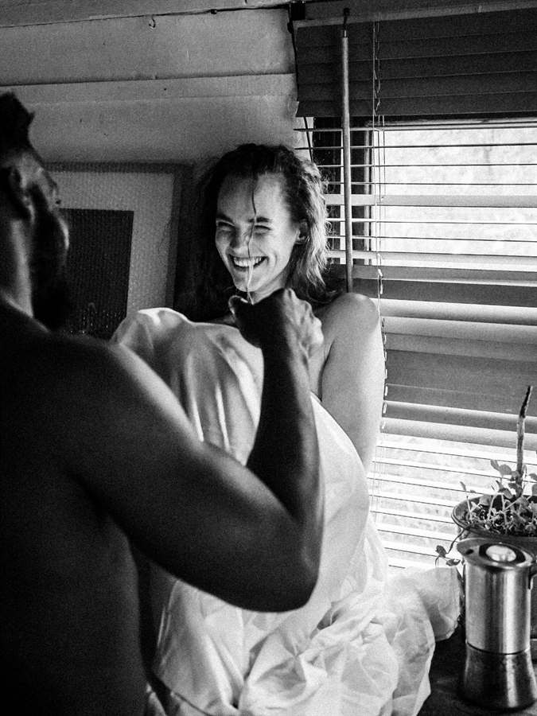
Снимаю на плёнку и на цифру — смотрю по свету и по тому, сколько у нас времени. Плёнку отдаю как есть, одним роликом подряд. Нейросети не использую: ни для дорисовки, ни для замены лиц, ни для «улучшения» кадра.
За 18 лет — 568 историй по всему миру. Восемь пар я снимал дважды: сначала свадьбу, потом с детьми. Ради второго раза всё и делается.
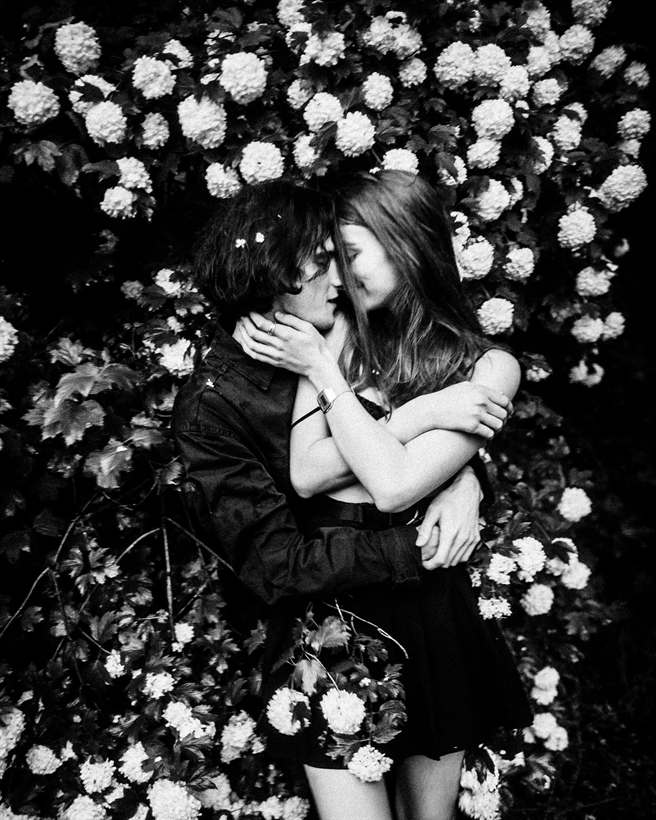
Плёнка
Одна плёнка целиком — без выбора «лучшего».
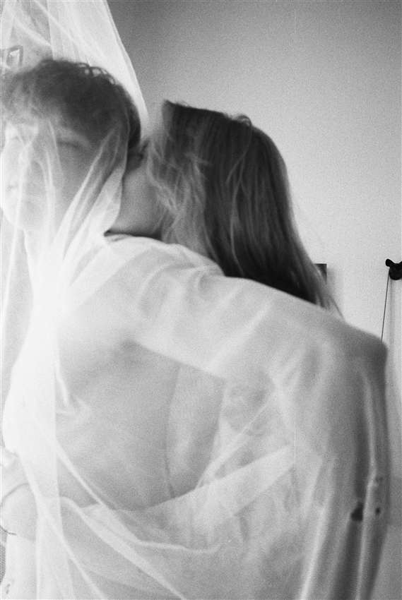
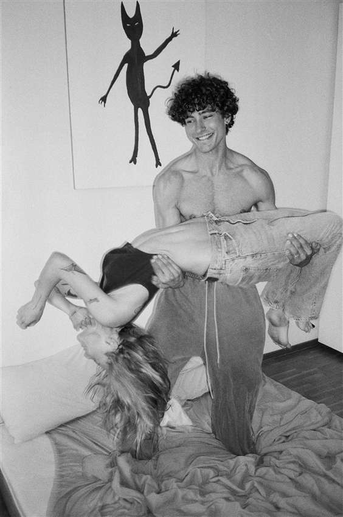
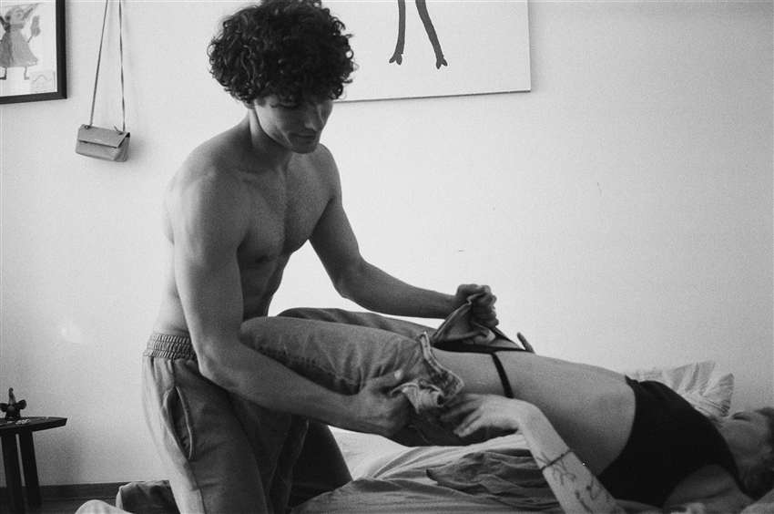
Один ролик подряд — без ретуши и пересъёмки
Акт II
Сближение
Между первым свиданием и решением проходит год, два, иногда десять.
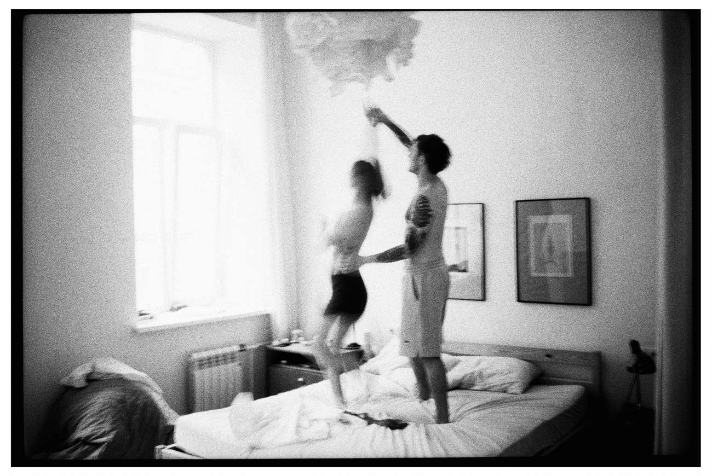
Акт III
Свадьба
Один день, к которому шли годами. Я прихожу за час до и ухожу последним.
Свадьбу снимаю целиком, без пакетов на четыре часа. Мне нужно застать утро, когда ещё ничего не началось, и ночь, когда все уже сняли обувь. Между этим — двенадцать часов, в которых я почти не разговариваю. Ни списка обязательных кадров, ни постановки у арки: всё, что происходит, происходит само.
Коротко
лет снимаю
историй
первая свадьба
Акт IV
Семья
Дальше начинается то, ради чего всё и было.
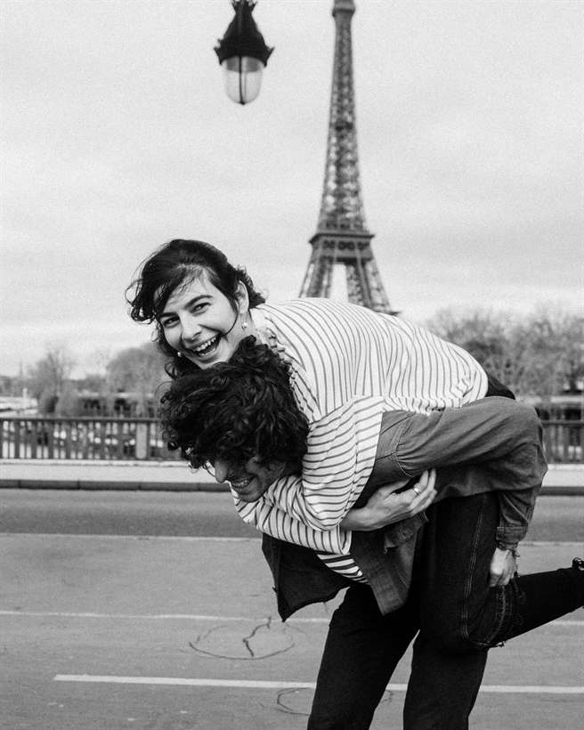
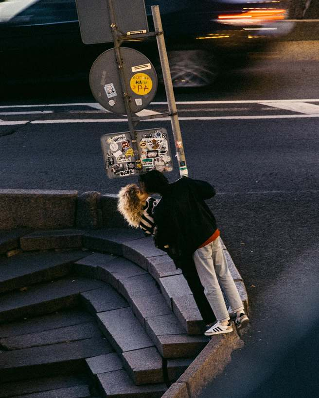
Говорят пары
«Мы боялись, что будет неловко. Через полчаса я поймала себя на том, что рассказываю Ване про бабушку, а он в это время снимал. Неловко так и не стало».
Аня и Кирилл · Петербург · 2024
«Ваня прислал шестьдесят кадров. Мама заплакала на четвёртом».
Марина и Тимур · Москва · 2023
«Мы позвали его из Нью-Йорка, ни разу не встретившись. Единственный человек в списке, за которого мы не волновались».
Nina & Michael · Нью-Йорк · 2024
Второе
Иногда я объясняю, как это устроено.
Раз в несколько месяцев собираю небольшую группу и разбираю не настройки, а то, что происходит между людьми до нажатия на кнопку. Как войти в чужой день и не сломать его. Как разговаривать, чтобы перестали позировать. Что делать, когда света нет, а снимать надо.
[ДАТА] · [МЕСТО] · [ЦЕНА] · осталось [МЕСТ] мест
Напишите мне.
Четыре шага: что снимаем, город, дата, как вас зовут. Минута времени, ответ в течение суток.
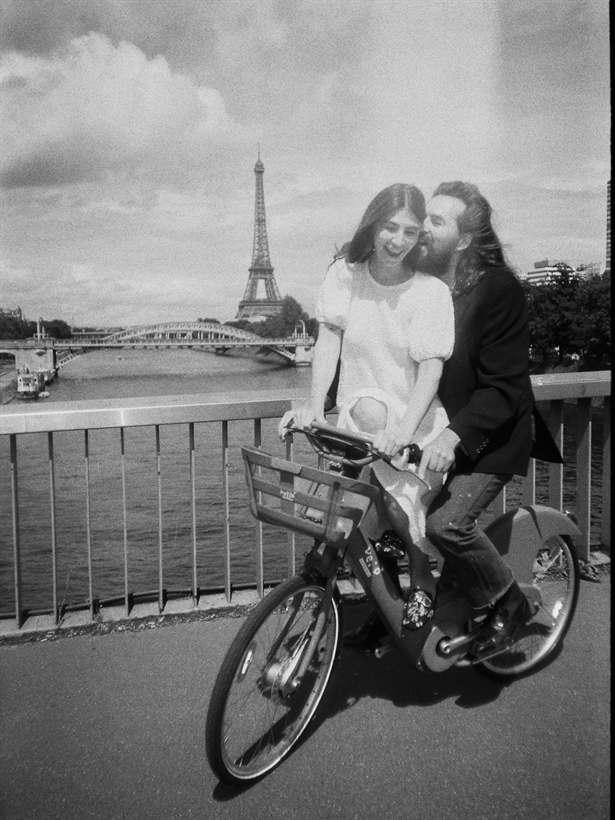